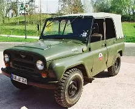

UAZ
UAZ is a Russian automobile manufacturer best known for producing rugged off-road vehicles, light trucks, and military transports. The name stands for Ulyanovsky Avtomobilny Zavod, meaning “Ulyanovsk Automobile Plant,” since the company has been based in the city of Ulyanovsk since its founding in 1941. The brand became famous for models like the UAZ-469, a military utility vehicle that gained a reputation for its simplicity, durability, and ability to traverse harsh terrain. This vehicle and its successors have been widely used by the Soviet and later Russian military, as well as by farmers, explorers, and drivers in remote regions where roads are unreliable. Unlike many modern SUVs that emphasize comfort, UAZ vehicles remain relatively spartan, with designs that prioritize mechanical toughness and ease of repair over refinement. Their boxy shapes, high ground clearance, and strong four-wheel-drive systems make them suitable for mud, snow, mountains, and deserts. In recent decades, UAZ has tried to modernize its lineup, introducing models like the UAZ Patriot, which blends off-road ability with more contemporary features, though the focus is still on functionality rather than luxury. Because of their resilience and relatively low cost, UAZ vehicles are sometimes described as being in the same spirit as older Land Rovers or Jeeps, built for utility above all else. They also hold cultural significance in Russia and neighboring countries, often associated with adventure, rural life, and military service.
